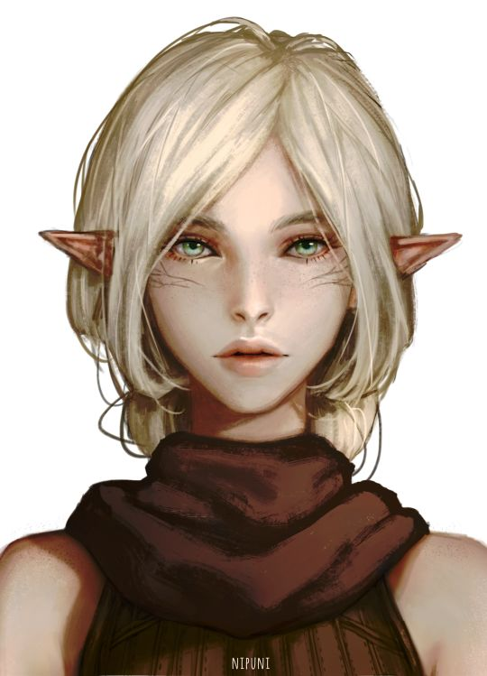

ELFO
"EU NUNCA IMAGINEI QUE TAL BELEZA EXISTISSE," LUA Dourada disse suavemente. A marcha do dia havia sido difícil,
mas a recompensa no final estava muito além de seus sonhos. Os companheiros estavam em um alto rochedo sobre a lendária cidade de Qualinost.
Quatro pináculos delgados erguiam-se dos cantos da cidade como hastes brilhantes, suas pedras brancas reluzentes
mescladas com um tom prateado cintilante. Arcos graciosos, ligando um pináculo a outro, se elevavam no ar.
Construídos por antigos ferreiros anões, eles eram fortes o suficiente para suportar o peso de um exército,
no entanto, eles pareciam tão delicados, que um pássaro pousado sobre eles, poderia lhes tirar o equilíbrio.
Estes arcos cintilantes eram as únicas fronteiras da cidade. Não havia nenhuma muralha em volta de Qualinost.
A cidade élfica abria seus braços de forma amorosa para a imensidão. – Margaret Weis & Tracy Hickman, Dragões do Crepúsculo do Outono
Elfos são um povo mágico de graça sobrenatural, vivendo no mundo sem pertencer inteiramente à ele.
Eles vivem em lugares de beleza etérea, no meio de antigas florestas ou em torres prateadas brilhando com luz feérica,
onde uma música suave ecoa através do ar e fragrâncias suaves flutuam na brisa. Elfos amam a natureza e a magia, a arte
e o estudo, a música e a poesia, e as coisas boas do mundo.
ESBELTOS E GRACIOSOS
Com a sua graça sobrenatural e seus traços finos, os elfos parecem assustadoramente belos para os humanos e os membros
de muitas outras raças. Em média, eles são ligeiramente mais baixos do que os humanos,
variando de pouco menos de 1,50 metro até pouco mais de 1,80 metro de altura. Eles são mais delgados que os humanos,
pesando entre 50 kg a 72 kg apenas. Os machos e as fêmeas são quase da mesma altura, mas os machos são um pouco mais pesados do que as fêmeas.
A coloração da pele dos elfos varia da mesma maneira que os humanos, e também incluem peles em tons de cobre, bronze,
até o branco-azulado, os cabelos podem ser de tons verdes ou azuis, e os olhos podem ser como piscinas douradas ou prateadas.
Elfos não possuem pelos faciais e poucos pelos no corpo. Eles preferem roupas elegantes em cores brilhantes, e gostam de joias simples, mas belas.
UMA PERSPECTIVA ATEMPORAL
Elfos podem viver bem mais de 700 anos, isso dá a eles uma ampla perspectiva sobre eventos que possam perturbar profundamente
raças que vivem uma vida mais curta. Eles são normalmente mais divertidos do que animados, e provavelmente mais curiosos do que
gananciosos. Elfos tendem a permanecer distantes e não se incomodam com uma pequena dose de acaso. No entanto, quando perseguem
um objetivo, seja aventurando-se em uma missão ou aprendendo uma nova habilidade ou arte, os elfos podem ser focados e implacáveis.
Eles são lentos para fazer amigos e inimigos, e ainda mais lentos para esquecê-los. Eles respondem insultos mesquinhos com desdém
e insultos graves com vingança. Assim como os galhos de uma árvore jovem, os elfos são flexíveis em face do perigo.
Eles confiam primeiramente na diplomacia para resolver as diferenças antes de partir para a violência. Eles são conhecidos por
recuar para suas casas na floresta perante os intrusos, confiantes de que podem simplesmente esperar os invasores irem embora.
Mas quando surge a necessidade, os elfos revelam um poderoso lado marcial, demonstrando habilidade com a espada, o arco e a estratégia.
REINOS ESCONDIDOS NA FLORESTA
A maioria dos elfos habita pequenas aldeias florestais escondidas entre as árvores. Elfos caçam, coletam e cultivam seus alimentos,
e sua perícia e magia os permite sustentar-se sem a necessidade de limpar e arar a terra. Eles são artesãos talentosos, criando roupas
e objetos de arte finamente adornados. Seu contato com estrangeiros é geralmente limitado, embora alguns elfos levem uma boa vida negociando
itens artesanais por metais (pois eles não têm interesse na mineração). Os elfos encontrados fora de suas terras são em geral menestréis
viajantes, artistas ou sábios. Humanos nobres costumam contratar elfos para o serviço de tutores, para que possam ensinar esgrima ou magia
aos seus filhos.
EXPLORAÇÃO E AVENTURA
Elfos se aventuram devido a sua fascinação em viajar. Tendo uma vida tão longa, eles podem desfrutar de séculos de exploração e descoberta.
Eles não gostam do ritmo da sociedade humana, que é ao mesmo tempo rotineira no dia a dia, mas sempre acaba mudando ao longo das décadas,
e por isso, eles procuram carreiras que os permita viajar livremente. Elfos também gostam de exercitar suas habilidades marciais ou ampliar
seus poderes mágicos, e aventurar-se os permite fazê-lo.
Alguns podem ser rebeldes que lutam contra a repressão injusta, enquanto outros podem ser campeões de causas morais.